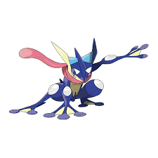

Greninja

Greninja adalah Pokémon bipedal yang menyerupai katak . Sebagian besar tubuhnya berwarna biru tua dengan dada dan perut kuning, tanda segitiga putih di atas setiap mata, bintang berujung empat berwarna biru muda di setiap paha, dan warna kuning di bagian bawah wajahnya. Ia memiliki mata merah dengan pupil putih dan mulutnya tersembunyi di balik lidah merah muda besar yang melilit lehernya dan memanjang ke belakang kepalanya. Di tengah kepalanya terdapat tonjolan seperti sirip, dan terdapat sirip serupa di setiap sisi kepalanya. Selaput biru muda menghubungkan sirip-sirip di kepalanya. Terdapat benjolan besar seperti gelembung putih di setiap siku dan lututnya. Kaki belakangnya memiliki dua jari, sedangkan kaki depannya memiliki tiga jari. Setiap jari memiliki ujung yang membulat dan selaput kuning.